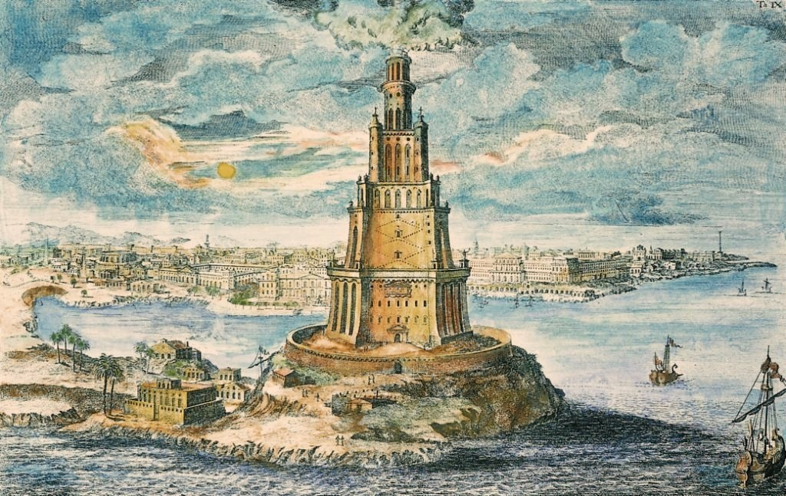

U wejścia do portu w Aleksandrii, na wyspie Faros, powstała pierwsza na świecie latarnia morska. Budowano ją przez 20 lat. Została zbudowana ok. 280 p.n.e. - 279 p.n.e. na podstawie planów architekta Sostratosa i na polecenie Ptolemeusza I, ukończona podczas rządów jego syna Ptolemeusza II. Możliwe, że pomysłodawcą budowy latarni był sam Aleksander Macedoński.
WYGLĄD LATARNI
Ocenia się, że była to wieża o wysokości ok. 115~120 m. Miała dolną kondygnację o przekroju kwadratu, nad nią wznosiła się kolejna, ośmiokątna i trzecia o przekroju okrągłym. Latarnia zwieńczona była kopułą wspartą na ośmiu kolumnach. Na niej ustawiony był posąg Posejdona o wysokości około 7 m.
PIERWSZA LATARNIA MORSKA
Jak już wspomniano była to pierwsza latarnia morska w czasach starożytnych. Po zmierzchu rozpalano na latarni ogień. Chrust był dostarczany na szczyt wieży na grzbietach osłów, a potem przez tragarzy. Odbijane metalowymi lustrami światło widoczne było z kilkudziesięciu kilometrów i znakomicie ułatwiało nawigację żeglarzom zdążającym do Aleksandrii.
CO SIĘ STAŁO Z LATARNIĄ
Przez 1000 lat latarnia pozostała nienaruszona. Dopiero w 769r. n.e. zawaliła się podczas trzęsienia ziemi. W 1477r. sułtan Mameluków Kait Bey wybudował na jej fundamentach twierdzę, która stoi do dziś. Kiedy zbudowano latarnię morską nie istniała jeszcze nazwa na nią więc nazywana była od miejsca, w którym stała, Faros.
[Jeżeli jestes chętny do zgłębienia tematu]